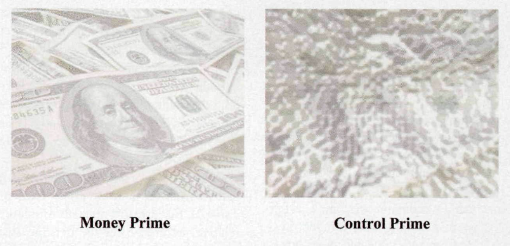
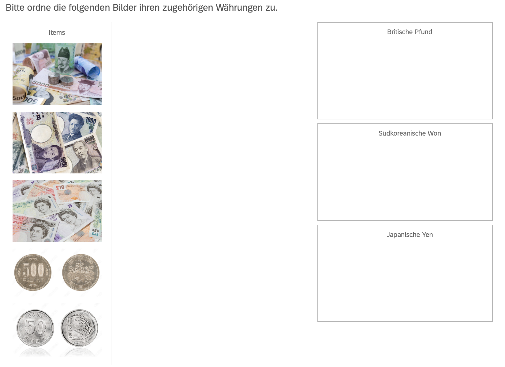
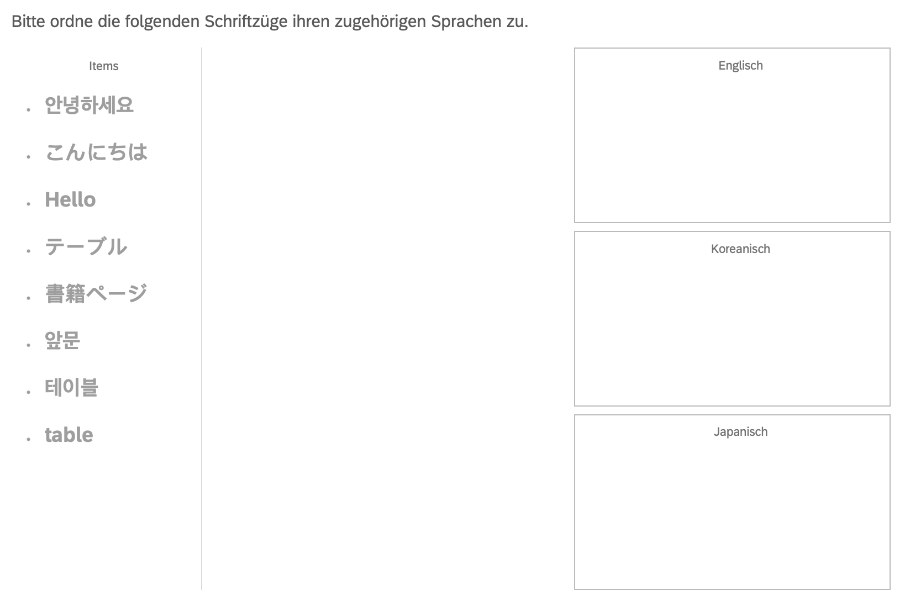
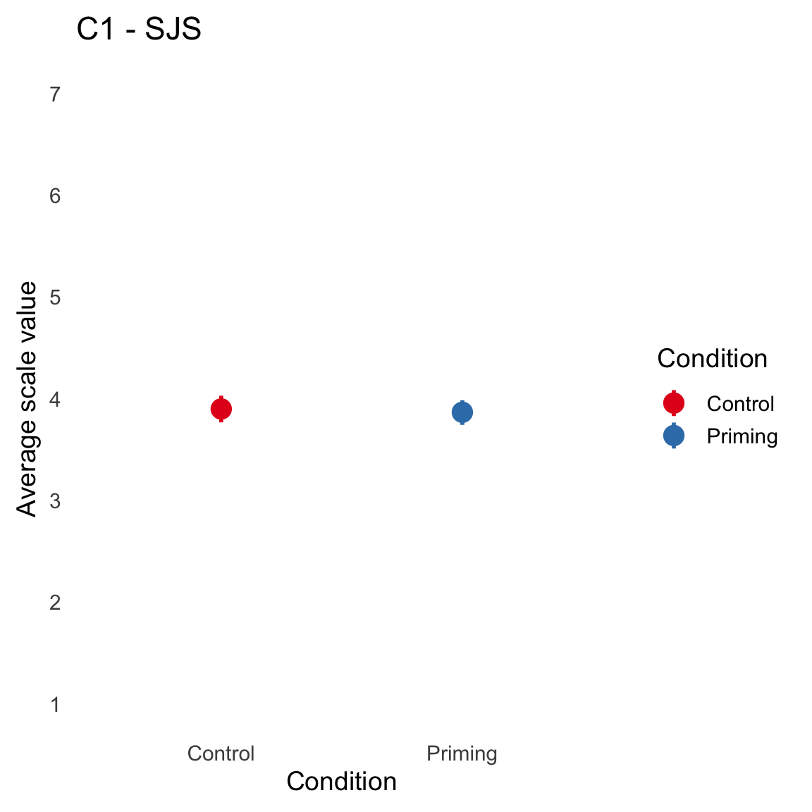
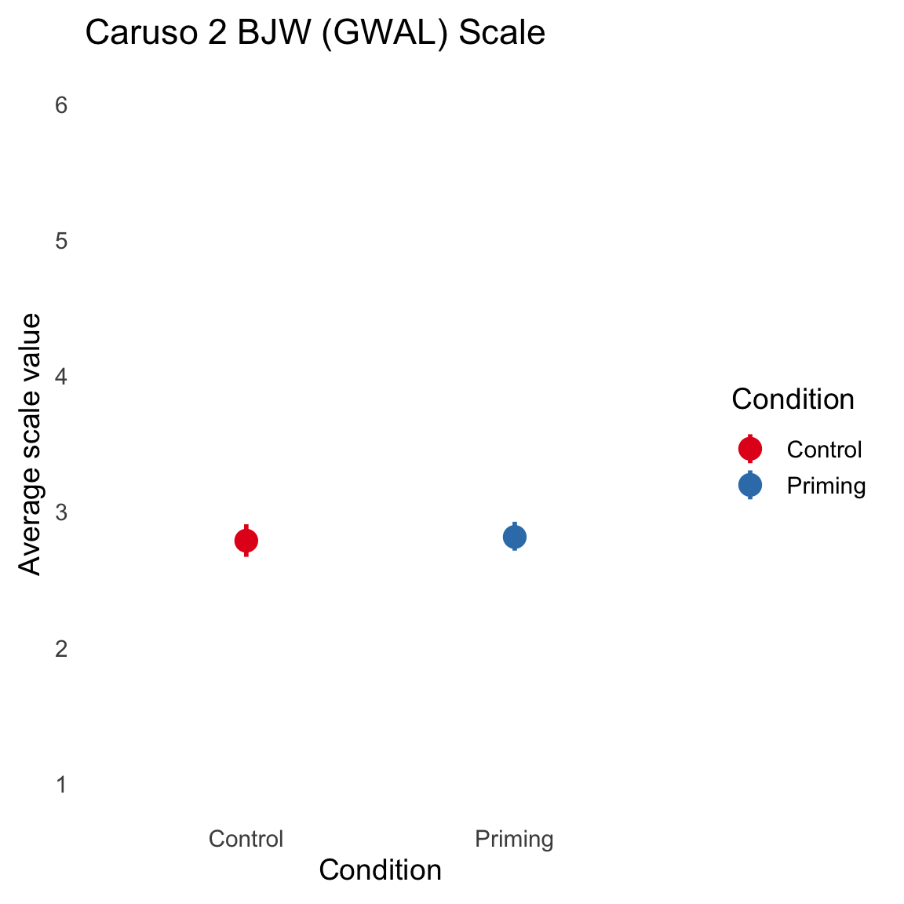
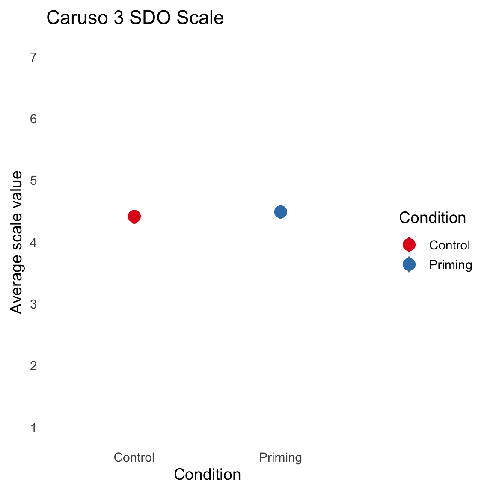
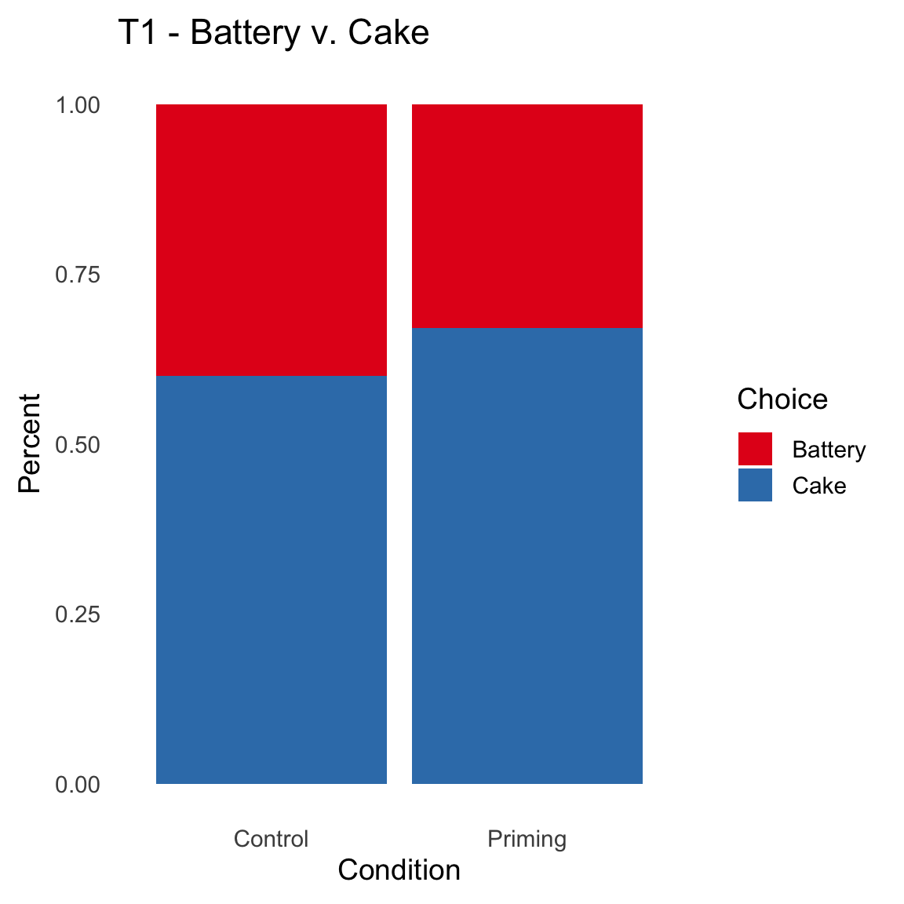
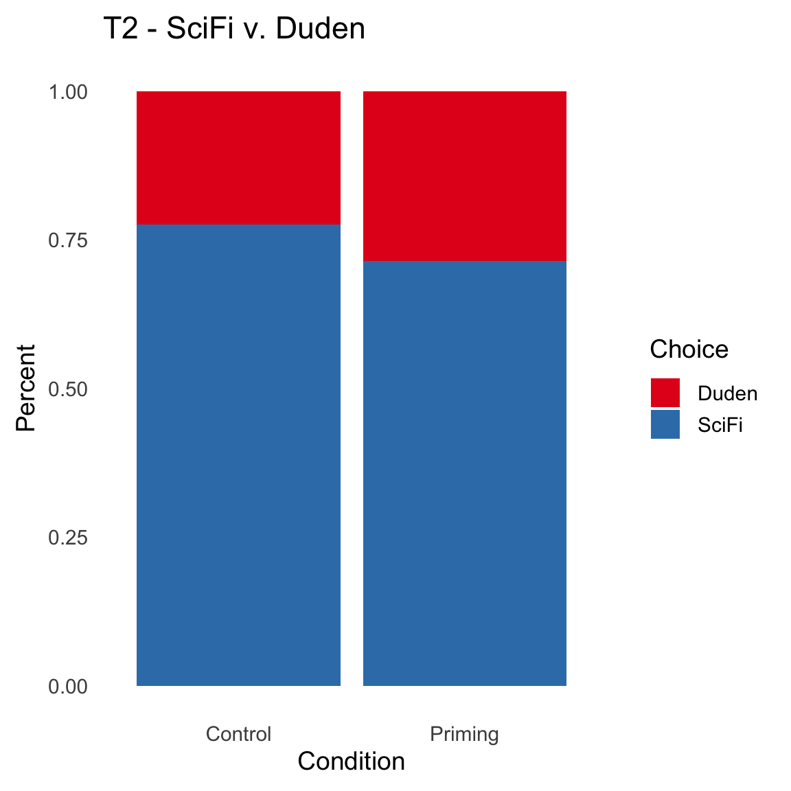
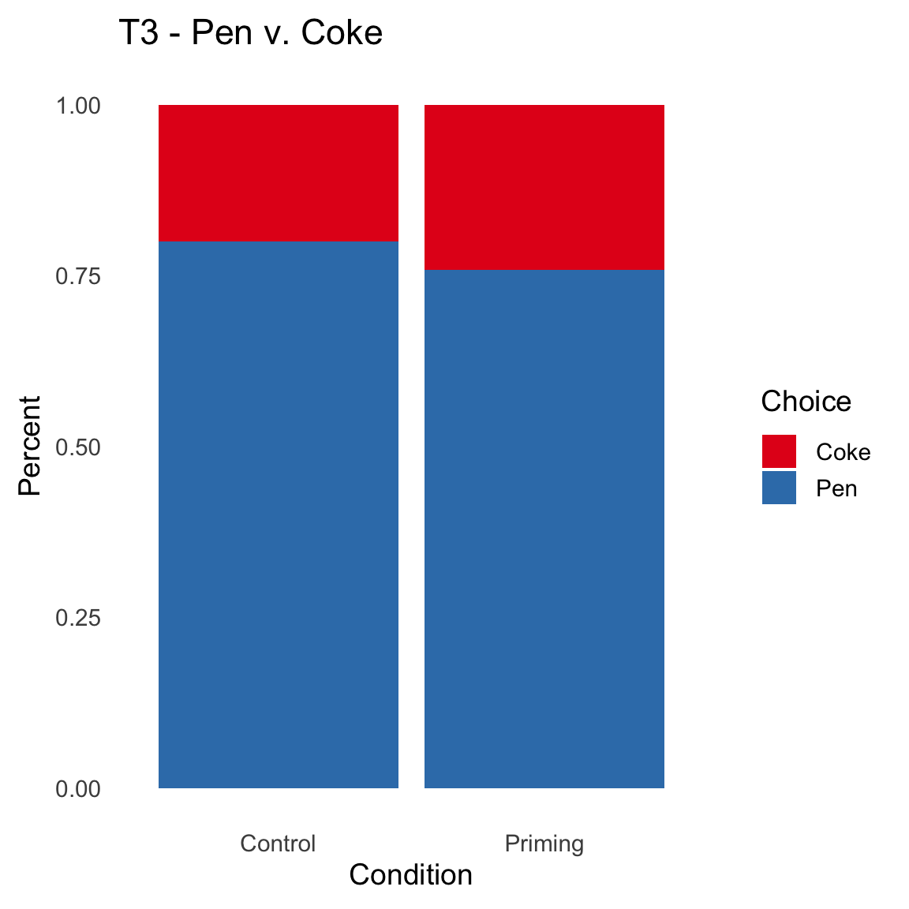

| condition | sentence |
|---|---|
| Control | Ich gehe immer am zweiten Dienstag des Monats ins Tanzen. |
| Control | Sein Wissen stieg mit der Anzahl besuchter Kurse. |
| Control | Kontinuität ist der Schlüssel zu einem langfristigen Erfolg. |
| Control | Auf dem Weg nach Hause verlor ich meine Kopfhörer. |
| Control | Damit ich von meinem Freund einen Apfel bekomme gebe ich ihm Schokolade. |
| Control | Ich stehe am Morgen auf um den Alltag zu bestreiten. |
| Control | Beim Einkaufen wähle ich Produkte der Intuition nach . |
| Control | Mit genug Willenskraft kannst du viele Träume verwirklichen. |
| Control | Reiseunternehmen beschäftigen sich mit Ländern auf der ganzen Welt. |
| Control | Ferienmangel kann im Alltag zu Angst und Stress führen. |
| Control | Nach jahrelanger Abklärung erhielt sie endlich eine Bewilligung. |
| Control | Ich muss mein ungesundes, kalorienreiches Essverhalten neu überdenken. |
| Control | Fleiss und aktives Engagement ermöglichen es mir meine Träume zu erfüllen. |
| Control | Die Teilnehmer wurden gebeten über ihre täglichen Routinen nachzudenken. |
| Control | Das kleine Kind kaut Kaugummis vor der Schule. |
| Priming | Ich bezahle meine Rechnungen immer am zweiten Dienstag des Monats. |
| Priming | Sein Vermögen wuchs durch kluge Investitionen in Aktien. |
| Priming | Sparen ist langfristig der Schlüssel zur finanziellen Stabilität. |
| Priming | Auf dem Weg nach Hause verlor ich meine Brieftasche. |
| Priming | Damit ich von einem Freund Schokolade bekomme, gebe ich ihm Geld. |
| Priming | Ich stehe am Morgen auf, um Geld zu verdienen. |
| Priming | Beim Einkaufen achte ich auf den Preis. |
| Priming | Mit genug Geld kannst du viele Träume verwirklichen. |
| Priming | Der Finanzmarkt beschäftigt sich auf der ganzen Welt mit Geldflüssen. |
| Priming | Stress und Geldnöte im Alltag können zu Angst im Alltag führen. |
| Priming | Nach jahrelanger Arbeit erhielt sie endlich eine Gehaltserhöhung. |
| Priming | Ich muss mein monatliches knappes Budget neu überdenken. |
| Priming | Macht und Geld ermöglichen es mir, meine Träume zu erfüllen. |
| Priming | Die Teilnehmer wurden gebeten, über ihre aktuellen Geldausgaben nachzudenken. |
| Priming | Das kleine Kind kauft vor der Schule Kaugummis. |
Original work
- Caruso et al. (2013). Mere exposure to money increases endorsement of free-market systems and social inequality.
- Tong et al. (2013). Is money really the root of all evil? The impact of priming money on consumer choice.
Team Bachelor BAFS2024
- Rahel Amrein
- Luc Blunier
- Angelo Cario
- Francesco Contino
- Manon Czibula
- Sarah Gassler
- Nina Hässig
- Jonas Huser
- Max Hofer
- Camille Meyer
- Yann Ruh
- Evan Sarbach
- Noah Schibli
- Patrick Stuber
- Luca Trachsel
- Louis Veya
- Mike von Arx
- Chantal Wegmueller
Abstract Caruso et al.
The present research tested whether incidental exposure to money affects people’s endorsement of social systems that legitimize social inequality. We found that subtle reminders of the concept of money, relative to nonmoney concepts, led participants to endorse more strongly the existing social system in the United States in general (Experiment 1 ) and free-market capitalism in particular (Experiment 4), to assert more strongly that victims deserve their fate (Experiment 2), and to believe more strongly that socially advantaged groups should dominate socially disadvantaged groups (Experiment 3). We further found that reminders of money increased preference for a free-market system of organ transplants that benefited the wealthy at the expense of the poor even though this was not the prevailing system (Experiment 5) and that this effect was moderated by participants’ nationality. These results demonstrate how merely thinking about money can influence beliefs about the social order and the extent to which people deserve their station in life.
Abstract Tong et al.
Despite the ubiquitous importance of money, the psychology of money has until recently received relatively little attention. While the literature has found that priming money has notable psychological consequences, little research has been done on the impact of priming money on consumer choice, particularly, their choice between hedonic and utilitarian options. The current research proposes that priming money will increase the likelihood of a prevention regulatory focus, and consequently, consumers will be more likely to choose more prudent alternatives when facing a trade- off between hedonic and utilitarian options. Results of four experiments show that participants in the money priming condition were more likely to choose utilitarian over hedonic options, compared with participants in the control condition. Furthermore, this effect was mediated by consumers’ situational prevention focus on the exposure to money primes, but attenuated when credit cards are primed.
Replication
Demographics
We collected data from 407 participants. After applying our pre-registered exclusion criteria (answering both control questions correctly) n = 172 participants remained. Additionally we excluded anybody whose survey completion time exceeded three times the SD over the mean.
\[CompletionTime_{i} < M_{CompletionTime} + 3SD_{CompletionTime}\] This step gave us a final sample of n = 171 participants. Due to my oversight, we did not collect gender or age information.
What we are looking for in Caruso et al.

Caruso et al. manipulated the availability of the concept money in an experimental condition and compared it to a control condition. As dependent variables they used three scales (in Experiments 1-3): System Justification Scale (SJS), Belief in a Just World scale (BJW) and the Social Dominance Orientation scale (SDO). Inspecting Table 1 from Caruso et al (Figure 1) we see that the Money (Priming) condition, in all three experiments, resulted in higher values on each of these scales. It is noteworthy, that there is variance between the three experiments in terms of differences between Money-Control in absolute values (0.07, 0.21, 0.64, respectively) but also in terms of effect sizes of the three t-tests: d = .80, .40 and .51 (respectively for Exp1, 2 and 3).
How we (re-)built the different conditions
In their Experiment 1 Caruso et al. used pictures of a US Dollar note (Priming) or noise (Control) as displayed in Figure 2.

We adapted these pictures to Swiss money (see Figure 3) or a neutral picture (see ?@fig-background-control) as the background in the SJS questionnaire.


For the Belief in a Just World scale in Caruso Experiment 2 / 3 and Tong Experiment 1 we used a sentence scrambling task similar to the one in Caruso et al. (2013) with translated (to German) and adapted sentences. We rated each of the suggested sentences for their fit to the current study and picked the ones with the highest overall rating by all collaborators in this study.
The final set of sentence is the following:
Finally, for Tong Experiment 2 / 3, we generated a new sorting task, where participants were asked to sort pictures of either currencies (Money Prime, see Figure 5) or pictures of different languages (control) into pre-defined classes (see Figure 6).


Results
We follow the analyses templates of the original papers and ask for Caruso et al. (2013) whether we find differences on the three scales based on a simple t-test on the averaged scale values (per condition priming v. control). I will summarize the results for all three experiments below.
Caruso Experiment 1 SJS

Welch Two Sample t-test
data: av_SJS by Condition
t = 0.3, df = 161, p-value = 0.8
alternative hypothesis: true difference in means between group Control and group Priming is not equal to 0
95 percent confidence interval:
-0.21 0.27
sample estimates:
mean in group Control mean in group Priming
3.9 3.9
Cohen's d
d estimate: 0.039 (negligible)
95 percent confidence interval:
lower upper
-0.27 0.34 Caruso 2 BJW (GWAL) Scale

Welch Two Sample t-test
data: av_BJW by Condition
t = -0.3, df = 159, p-value = 0.8
alternative hypothesis: true difference in means between group Control and group Priming is not equal to 0
95 percent confidence interval:
-0.32 0.24
sample estimates:
mean in group Control mean in group Priming
2.8 2.8
Cohen's d
d estimate: -0.041 (negligible)
95 percent confidence interval:
lower upper
-0.35 0.26 Caruso 3 SDO Scale

Welch Two Sample t-test
data: av_SDO by Condition
t = -0.8, df = 151, p-value = 0.4
alternative hypothesis: true difference in means between group Control and group Priming is not equal to 0
95 percent confidence interval:
-0.21 0.09
sample estimates:
mean in group Control mean in group Priming
4.4 4.5
Cohen's d
d estimate: -0.13 (negligible)
95 percent confidence interval:
lower upper
-0.43 0.18 This is a pretty clear result - the average differences in all three experiments are zero to .1 on the respective scales. Inspecting the effect sizes the range between .03 and .1 (in absolute terms) supports the idea that there are no sensible effects between the tested conditions on the scales. Alright, one down, one to go - let’s see how the choice experiments fair under different priming conditions.
What we are looking for in Tong et al.
The three experiments in Tong et al. (2013) also use different priming methods: sentence construction (as in Caruso et al. 2013, see @tab-results-sentence) and a sorting task (see Figure 5 and Figure 6). The dependent measures were simple choices in this study, between different sets of goods that have either more hedonic (cake, Sci-Fi Book, Coke) or more utilitarian (battery, dictionary, pen) connotation.
Following the original paper, we used the same analytic strategy and calculated chi-2 tests separately for each of three experiments.
Inspecting the results in Tong et al. (2013) the following patterns were found. I will simply summaries the choices in the money priming condition where in Exp 1: 70 % / Exp 2: 57 % / Exp 3: 77 % of participants choose the hedonic option compared to Exp 1: 40 % / Exp 2: 30 % / Exp 3: 55 % in the control condition). So overall sizable differences in the choice patterns between 22 and 30 points difference between the conditions.
Tong 1 Battery Cake

Pearson's Chi-squared test
data: T1_BC$Condition and T1_BC$Choice_T_Battery
X-squared = 0.9, df = 1, p-value = 0.3Tong 2 Sci-Fi Duden

Pearson's Chi-squared test
data: T2_Book$Condition and T2_Book$Choice
X-squared = 0.8, df = 1, p-value = 0.4Tong 3 Pen v. Coke

Pearson's Chi-squared test
data: T3_Pen$Condition and T3_Pen$Choice
X-squared = 0.4, df = 1, p-value = 0.5Inspecting Figure 10, Figure 11, Figure 12 and the subsequent chi-2 tests, it becomes clear, that, again, we do not find significant differences in these tests, or sizable differences on the pure choices. Overall the conditions differ around 10 % between control and money priming - which is much smaller, than in the original.
Caveats
So, some caveats … there are of course many - but I will focus on two:
- within-subject effect
- no control condition
We ran a within-subject design across the 6 experimental studies - while both Caruso and Tong used a between subjects design, with somewhat small samples (see our power analysis in the Pre-Regs), we decided to run a within-subjects study where participants either got treated with the priming or the control condition. To mitigate the possible order effects we randomized two blocks (Tong v. Caruso) … running all analysis again with this Block Order does not result in a significant main effect for Order or an interaction between Condition * Order. The same is true for Tong when we run separate chi-2 tests for the two different order conditions (see below Section 4.1).
Another small oversight was the addition of a control condition in Tong in Experiment 2 where they added an ‘empty’ control task, where no identification of currency or foreign language was included. I belief this is a smaller issue.
Overall this was a fun exercise, a good teaching experience (in a rather large group).
Withing versus between subjects - design
Here I add some additional analysis, checking for an effect of Order - which is the variation of whether Tong or Charuso appeared first for participants (as discussed above).
Caruso 1 SJS
Df Sum Sq Mean Sq F value Pr(>F)
Condition 1 0.0 0.038 0.06 0.80
Order 1 0.1 0.132 0.22 0.64
Condition:Order 1 0.0 0.000 0.00 0.99
Residuals 164 98.1 0.598
1 observation deleted due to missingnessCaruso 2 BJW (GWAL) Scale
Df Sum Sq Mean Sq F value Pr(>F)
Condition 1 0.1 0.061 0.07 0.79
Order 1 0.1 0.145 0.17 0.68
Condition:Order 1 0.0 0.049 0.06 0.81
Residuals 165 140.4 0.851 Caruso 3 SDO Scale
Df Sum Sq Mean Sq F value Pr(>F)
Condition 1 0.2 0.162 0.67 0.41
Order 1 0.0 0.009 0.04 0.85
Condition:Order 1 0.6 0.608 2.52 0.11
Residuals 165 39.7 0.241 Tong 1 Battery Cake
Pearson's Chi-squared test
data: T1_BC[T1_BC$Order == "Block1", ]$Condition and T1_BC[T1_BC$Order == "Block1", ]$Choice
X-squared = 2, df = 1, p-value = 0.1
Pearson's Chi-squared test
data: T1_BC[T1_BC$Order == "Block2", ]$Condition and T1_BC[T1_BC$Order == "Block2", ]$Choice
X-squared = 0.03, df = 1, p-value = 0.9Tong 2 Sci-Fi Duden
Pearson's Chi-squared test
data: T2_Book[T2_Book$Order == "Block1", ]$Condition and T2_Book[T2_Book$Order == "Block1", ]$Choice
X-squared = 0.04, df = 1, p-value = 0.8
Pearson's Chi-squared test
data: T2_Book[T1_BC$Order == "Block2", ]$Condition and T2_Book[T2_Book$Order == "Block2", ]$Choice
X-squared = 1, df = 1, p-value = 0.3Tong 3 Pen v. Coke
Pearson's Chi-squared test
data: T3_Pen[T3_Pen$Order == "Block1", ]$Condition and T3_Pen[T3_Pen$Order == "Block1", ]$Choice
X-squared = 0.07, df = 1, p-value = 0.8
Pearson's Chi-squared test
data: T3_Pen[T3_Pen$Order == "Block2", ]$Condition and T3_Pen[T3_Pen$Order == "Block2", ]$Choice
X-squared = 2, df = 1, p-value = 0.2References
- Caruso, E. M., Vohs, K. D., Baxter, B., & Waytz, A. (2013). Mere exposure to money increases endorsement of free-market systems and social inequality. Journal of Experimental Psychology: General, 142(2), 301.
- Tong, L., Zheng, Y., & Zhao, P. (2013). Is money really the root of all evil? The impact of priming money on consumer choice. Marketing Letters, 24, 119-129.